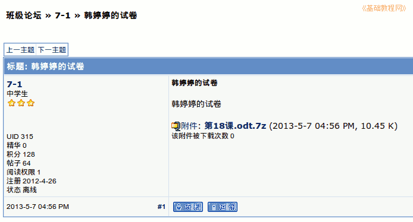

2012-2013 第二学期七年级文字处理和网页教学设计
作者：TeliuTe 来源：基础教程网
十八、学会打压缩包上传 返回目录 下一课
（一）教学设计
1、学习目标：学会打压缩包上传
2、注意事项：绕过弯来，既不要跳也不要落，一楼过了二楼
3、教学过程：
1）教师准备学案和板书；
2）学生整队进入，开机抄黑板上笔记；
3）教师讲解板书演示操作；
4）学生打指法、日志、完成操作；
5）教师打勾记录学生指法成绩，检查日志和操作；
注：学生抄完笔记就开始打指法、日志，老师讲完后再继续完成；
（二）板书设计(学生笔记)
第18课 学会打压缩包上传
1、保存好第十八课，打开，7-2文件夹
2、瞄准第18课，点右键，压缩，选7Z，创建
3、校园网，班级论坛，登陆，7-2,7-2
4、发表新帖，×××的试卷，正文附件，浏览，发新话题
--
操作指南：一张卷子的样图，班级、姓名、考号填自己的
--
操作图示：

（三）课后记 2013-05-07 17:29
这节课算期中考试，做一张数学卷子
学生个个急的，以前说期中考试后开网
--
指法、日志都很快了，方法要求一下
不要低头，抄笔记字写整齐
--
装订线的区域有些忘记了
发帖的会卡住，让后退然后重新操作
--
讲的还是有些啰嗦，生怕学生做不出来
等再过几年没精力了，估计就不会这么细致
--
把要求的讲到，然后放手让学生去做也好
一个半学期了，学生已经习惯了教学方法和步骤
--
记录的项目有些多，这样就累的加上来回跑
得把这个着急的问题解决一下，发现问题解决问题
--
天天瞌睡的，中午晚上搞机器人，上周的晚自习
再上班每天的课，晚上还练拳，忙的跟什么一样
--
班图里的webqq过代理上不去，xp下面的360浏览器可以
搞不清是怎么回事，后面再看该怎么弄
返回目录 下一课
本教程由86团学校TeliuTe制作|著作权所有
基础教程网：http://teliute.org/
美丽的校园……
转载和引用本站内容，请保留作者和本站链接。